Residential Space Design
Residential architecture is at the heart of what we do at Mu'afah Architects. From single-bedroom flats to sprawling gated communities, our residential design team in Chennai crafts homes that balance beauty with everyday practicality — layouts that feel spacious even on compact urban plots, facades that reflect the owner's personality, and floor plans that are engineered around how a family actually lives, cooks, entertains, and rests. Every residential project begins with an in-depth client consultation covering budget, plot orientation, Vastu preferences, family structure, and long-term growth plans, followed by concept sketches, 2D CADD floor plans, 3D visualisations, and finally a complete construction-ready drawing set that our client's chosen contractor can execute without ambiguity.
Because Chennai's climate is hot, humid, and monsoon-prone for a significant part of the year, our residential architecture practice places heavy emphasis on cross-ventilation, shaded courtyards, correctly oriented window placements, and roof insulation strategies that keep interiors naturally cooler — reducing long-term dependency on air conditioning. We also integrate Vastu Shastra principles wherever the client desires, balancing traditional directional guidelines for the kitchen, pooja room, and main entrance with modern spatial efficiency, so the home feels both auspicious and genuinely livable.
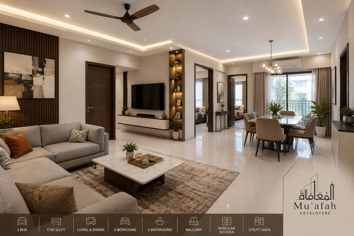
Flats
Smart, efficient apartment layouts that make every square foot count — ideal for compact urban living in Chennai without compromising on natural light, cross-ventilation, or storage.

Apartments
Multi-room residential units designed for comfort and long-term resale value, balancing private bedrooms with shared living and dining spaces within a building's footprint.
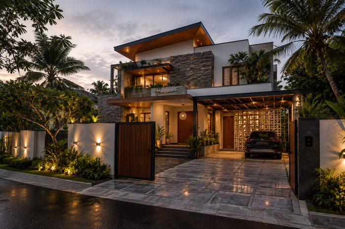
Villas
Standalone luxury residences with generous proportions, private gardens, and a strong architectural identity that reflects the owner's stature and lifestyle aspirations.
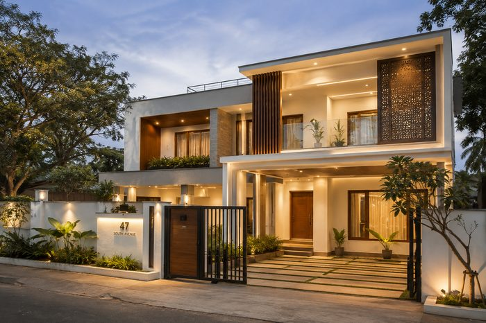
Bungalows
Single or double-storey homes with classic proportions, blending traditional Tamil Nadu residential charm with contemporary functionality and updated services.
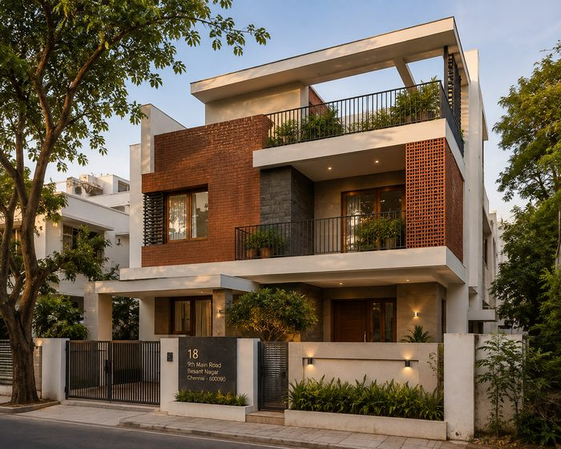
Stand-Alone Houses
Custom-built independent homes designed entirely around your family's needs — from plot orientation and Vastu alignment to room-by-room functional planning.
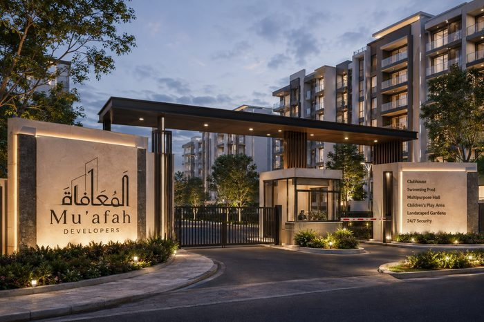
Complexes & Gated Communities
Master-planned residential developments with shared amenities, secure access, and a cohesive architectural language repeated efficiently across every unit typology.
Commercial Space Design
Commercial architecture demands a different discipline from residential work — every square foot must justify its cost through footfall, leasing appeal, or operational efficiency. Mu'afah Architects designs shops, malls, and commercial complexes across Chennai that command attention from the street while working hard behind the scenes: efficient core and circulation planning, code-compliant fire egress, adequate parking ratios, and flexible floor plates that can accommodate multiple tenant types without expensive structural rework down the line.
For developer clients, we understand that commercial architecture is fundamentally an investment decision — our team works closely with structural engineers, MEP consultants and local municipal authorities (including CMDA approval processes) to ensure every commercial project we design is not just visually striking but genuinely buildable within budget and timeline constraints. From a single street-facing shop to a multi-storey commercial complex with mixed retail and office tenancy, we bring the same rigour to scale.
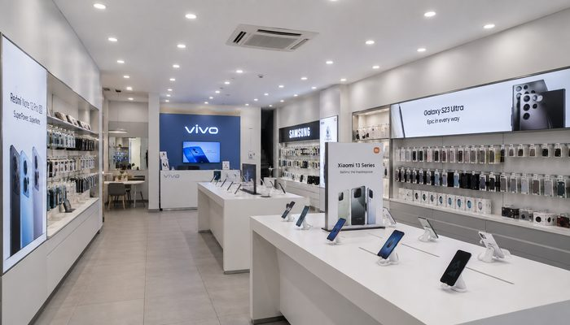
Shops
Storefront and interior layouts designed to maximise street visibility, walk-in conversion, and brand presence for independent retail businesses.
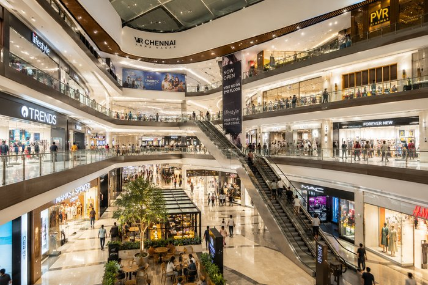
Malls
Large-format retail environments planned for footfall flow, tenant mix, and a memorable customer journey from entry through to checkout and exit.
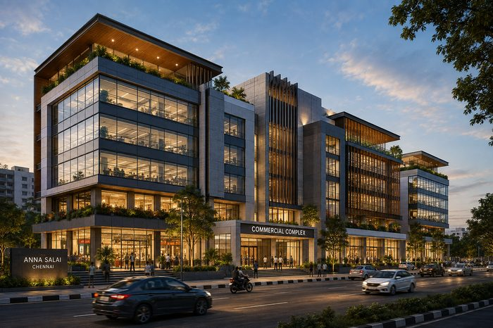
Commercial Complexes
Mixed-use and multi-tenant commercial buildings designed for efficient circulation, ample parking, and long-term leasing appeal in prime Chennai corridors.
Residential Interiors
A well-designed floor plan is only half the story — interior design is what makes a house feel like home. Mu'afah's interior design team curates every material, colour, texture, and light fixture to create residential interiors that reflect your personality while elevating your daily routine. We approach interior design as a cohesive, whole-home exercise rather than a room-by-room afterthought, ensuring a consistent material palette and design language flows from the living room through to the bedrooms, kitchen, and bathrooms — avoiding the disjointed, mismatched feel common in piecemeal renovations.
Our residential interior design services cover everything from full home interiors and modular kitchen planning to bedroom design, living and dining space curation, and lighting design that layers task, ambient and accent lighting for a genuinely comfortable atmosphere at any hour. We work with both new-build clients who want their interiors finalised alongside the architecture, and renovation clients looking to modernise an existing home without losing its original character.

Home Interiors
Whole-home interior design covering every room with a consistent material palette, colour story, and design language from foyer to bedroom.

Living Spaces
Living and dining areas designed for both everyday family comfort and confident entertaining, balancing openness with cosy detailing.
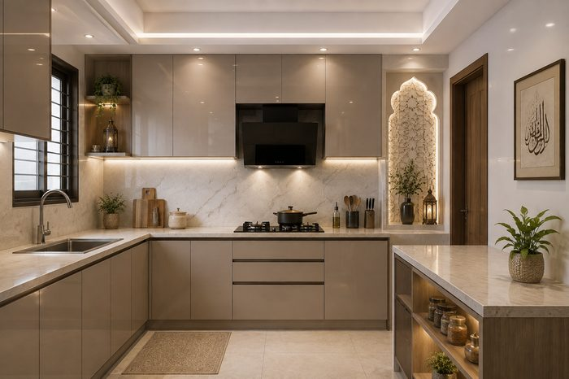
Modular Kitchens
Functional modular kitchen layouts built around the classic work-triangle for cooking efficiency, balanced with a clean, modern aesthetic and ample storage.

Bedrooms
Restful, well-lit bedroom interiors with integrated wardrobe storage, layered lighting design, and a calm, sleep-conducive material palette.
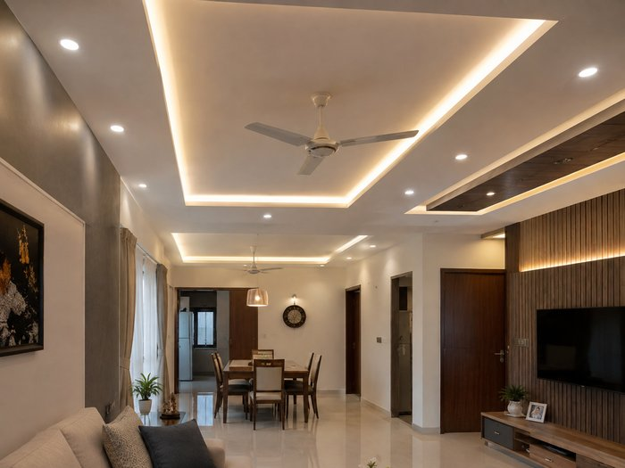
False Ceilings
Multi-level gypsum false ceiling designs with integrated cove and spot lighting, adding architectural depth to living and dining spaces while concealing wiring and ductwork cleanly.
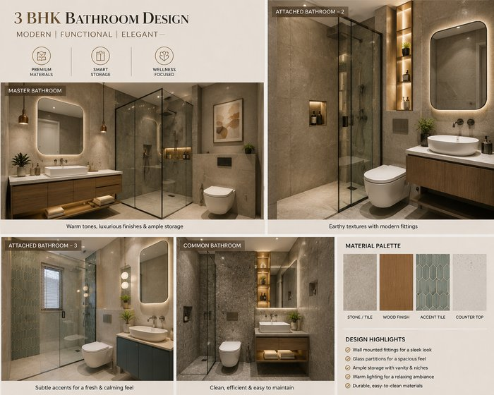
Bathrooms
Modern bathroom interiors with premium tiling, glass shower partitions, and wall-mounted fittings — designed for a spa-like feel that's also durable and easy to maintain.
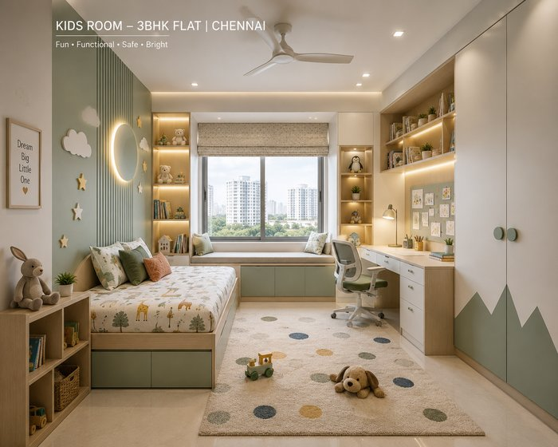
Kids Room
Fun, functional and safe kids' bedroom interiors featuring built-in study zones, playful themes, and durable, easy-to-clean finishes that grow with the child.
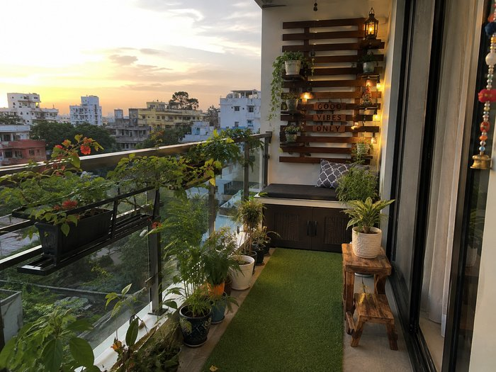
Balcony Areas
Balcony and sit-out spaces reimagined as green, relaxing extensions of the home — with seating, planters, and lighting designed to make the most of outdoor views.
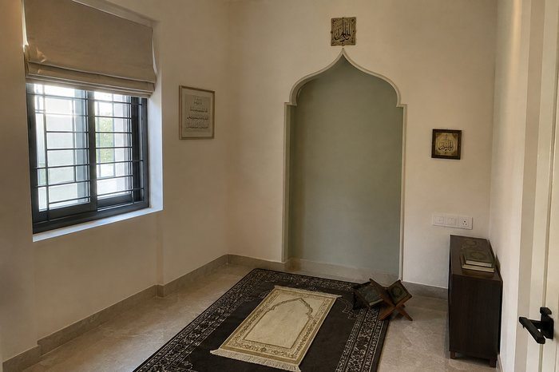
Prayer Rooms
Serene, dedicated prayer spaces designed with calming materials and thoughtful detailing, offering a quiet corner set apart from the rest of the home.
Showroom & Office Interiors
Commercial interiors are designed to convert — from premium automobile and jewellery showrooms to high-performance corporate office environments, every square foot must earn its place. Mu'afah Architects designs showroom interiors that guide customer movement toward hero products, put your best merchandise centre-stage under carefully considered display lighting, and create the kind of branded first impression that builds trust before a single sales conversation happens. For jewellery and luxury retail clients specifically, we integrate secure display casework and private consultation spaces without compromising on the premium look and feel the brand demands.
On the office interiors side, we design workspaces that balance open-plan collaboration zones with acoustically-treated meeting pods and focus areas, always with an eye toward future headcount growth so the layout doesn't need a costly redesign every time the company scales. Whether it's a branded automobile showroom, a jewellery boutique, a corporate office floor, or a retail brand environment, our showroom and office interior design process is grounded in the same principle: the space should work as hard as the business itself.
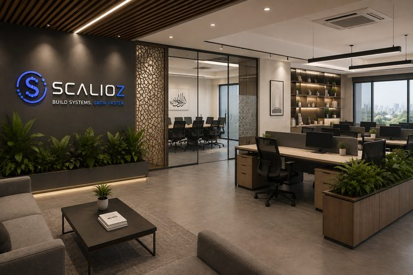
Office Interiors
Workspace design that balances productivity, collaboration zones, and a brand-forward first impression for visitors and prospective employees alike.
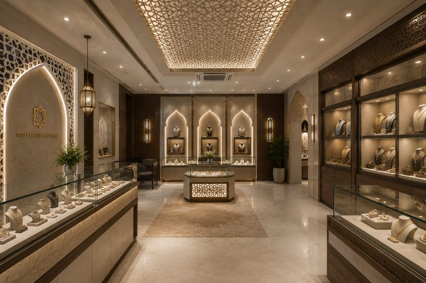
Showroom Design
Product-led showroom layouts — from automobile to jewellery — that guide customer movement and put your best products centre-stage.
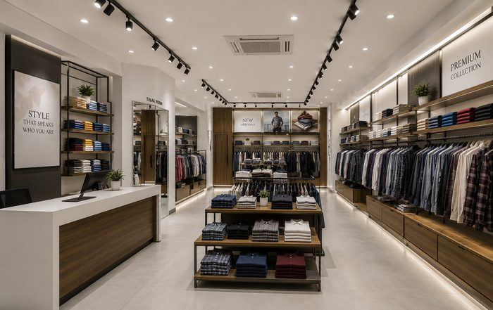
Retail Interiors
In-store interior design optimised for product display, customer flow, and conversion at the point of sale in high-footfall retail locations.